A physics world model under distribution shift
A 38M-parameter video world model (CNN-VAE + flow-matching DiT) is trained on three simulated physical environments at 64×64 resolution. The trained models are evaluated on scenes outside the training distribution, with higher object counts, unseen object sizes, object kinds never seen in training, and more oval planet orbits. The physical constants of each world are re-measured directly from model rollouts.
Model
Two stages, trained separately: a VAE compresses each frame into a latent image, and a flow-matching transformer predicts the latent of the following frame(s). Rollouts are autoregressive. The model receives 5 context frames and then continues on its own predictions.
VAE
Convolutional autoencoder, ConvNeXt blocks; one per world
- parameters23.5M
- latent8×8 × 32 channels (2048 dims/frame)
- base width128 channels
- blocks1 encoder / 2 decoder res blocks
- during DiT trainingfrozen
DiT
Diffusion transformer trained with flow matching on latent sequences
- parameters14.5M
- sized = 256, 12 layers, 8 heads
- context5 frames
- predictionnext 1 frame (balls/shapes), 5 (solar)
- inference3 sampling steps (2 for solar)
- trainingHuber loss, EMA 0.999, context noise 0.05, bf16
Environments and datasets
All data is generated by exact simulators, so every evaluation compares the model against ground truth known to machine precision. Each image below shows three sample scenes from the dataset.
Bouncing balls
pymunk engine · 60,000 trajectories × 100 frames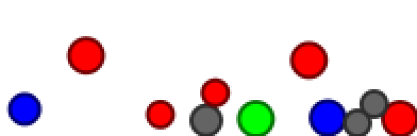
2–5 balls, radius 5–8 px; gravity −0.5 px/frame², speed-dependent air drag, no rotation. Four materials with different bounciness (fraction of speed kept per bounce): Superball 0.95, Rubber 0.80, Steel 0.40, Sponge 0.20.
Rigid shapes
pymunk engine · 60,000 trajectories × 100 frames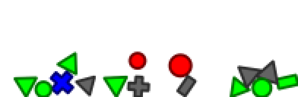
Same engine and physics: triangles, pluses, planks and balls that stack, topple and slide. A second 60,000-trajectory variant without balls trains the model for test 5, held-out object kind.
Solar systems
exact orbit formulas · 200,000 trajectories × 30 frames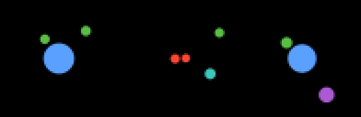
Orbits are computed directly from Kepler's formulas, so the ground truth is exact rather than a physics-engine approximation. 1–3 planets per system, 25% double stars, at most mildly oval orbits. The star's color sets the strength of its gravity: blue strongest, yellow middle, red weakest.
Out-of-distribution tests
Each test moves one attribute beyond the training range. All quantities are measured from 300-frame rollouts: objects are tracked frame by frame with sub-pixel precision, counted, and the physical constants are re-fitted from those tracks. Every measurement is also run on real simulator frames through the same pipeline, which separates model error from measurement error. Error bands are ±1 standard error.
1 · Object count
Trained on 2–5 balls, evaluated on 3, 5, 7 and 9 (1,000 scenes per count).
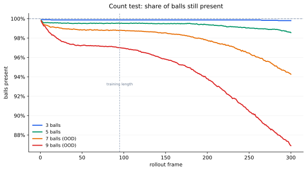
The trained counts (3 and 5 balls) hold near 100% over the full rollout. At 7 and 9 balls there is a quick loss in the first frames, then a flatter stretch, and then the decline speeds up again past the training-length line, reaching 94.3% and 86.9% by frame 300. The effect is strongest at 9 balls. The model never invents extra objects.
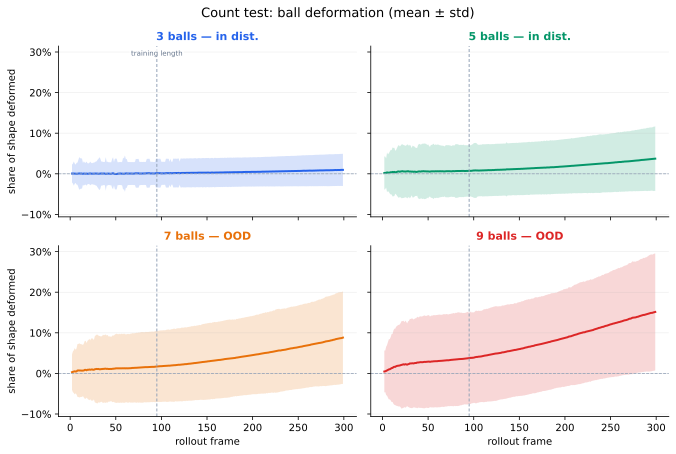
At the trained counts the average deformation stays near zero for the whole rollout. At 7 and 9 balls it grows steadily, reaching 9% and 15% of the shape by frame 300.
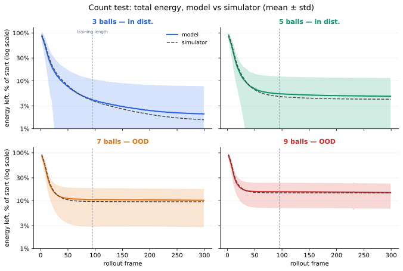
Read with care: the 9-ball model curve lies closest to its simulator, but this is coincidental. The model overestimates scene energy at every count. At 9 balls, early object loss also removes energy from the scene, and the two errors partially cancel.
2 · Physical constants
Gravity, air drag and restitution (bounciness) are re-measured from model rollouts: gravity and drag from the flight paths of tracked balls, restitution from wall bounces. Gray points show the same measurement applied to real simulator frames: any deviation there is measurement error, not model error.
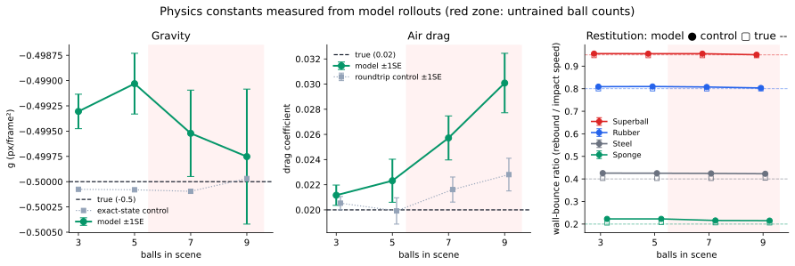
Gravity and restitution (bounciness) stay at their true values at every count. Air drag is the only constant that degrades: the more balls in the scene, the more the model slows everything down, from +6% extra drag at 3 balls to +50% at 9. Gravity measures correct even in those same scenes, so this is genuinely a drag error and not a hidden gravity error.
3 · Object size
Trained on radius 5–8 px, evaluated on small (3–4 px) and large (9–12 px) balls.
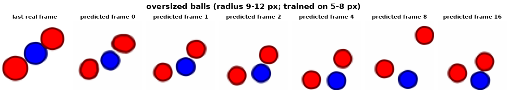
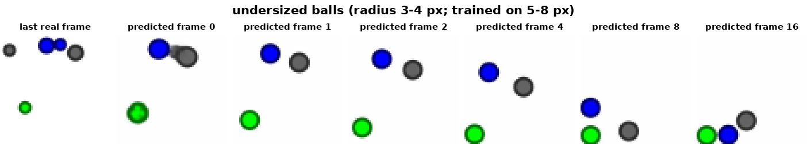
Oversized balls (top strip) are shrunk step by step to the sizes the model was trained on; undersized balls (bottom strip) are enlarged, merged or removed. The model edits the scene until it looks like its training data, then simulates it normally.
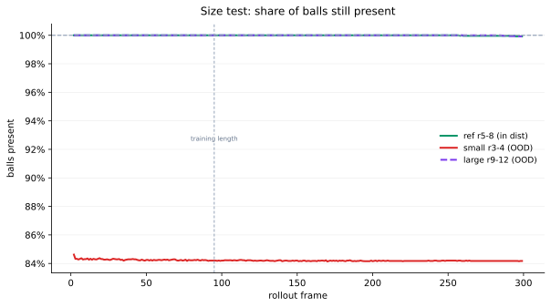
Large balls essentially all survive: after the model shrinks them to trained sizes, they behave like trained balls and their curve lies on the reference. Small balls genuinely disappear during the resize: survival drops to 84% in the first frames and stays there.
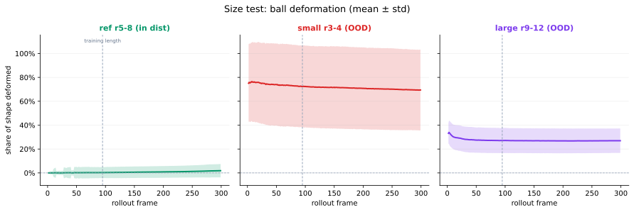
Small balls are misdrawn from the very first frames: the model replaces them with larger balls, so around 70% of their shape stays wrong for the entire rollout. Large balls settle near 27% after the initial resize. The slow downward drift of the small-ball curve is partly the worst balls disappearing and dropping out of the count.
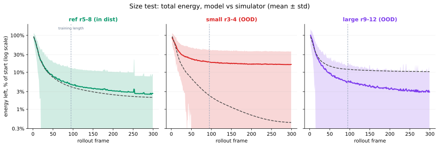
After the resizing the model's balls are different sizes than the simulator's, so these curves compare two different scenes; read them with care.
4 · Orbit shape (eccentricity)
The solar model, trained on near-circular orbits, is run on clearly oval ones (1,000 scenes) and compared against the exact orbit math.
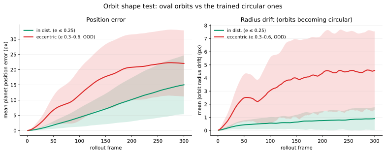
On oval orbits the planets drift off the true positions several times faster than on familiar circular ones, and the orbit radius keeps changing: the model slowly reshapes oval orbits into the circular orbits it was trained on. One thing survives: planets still correctly move faster when they are closer to their sun, almost exactly as physics demands.
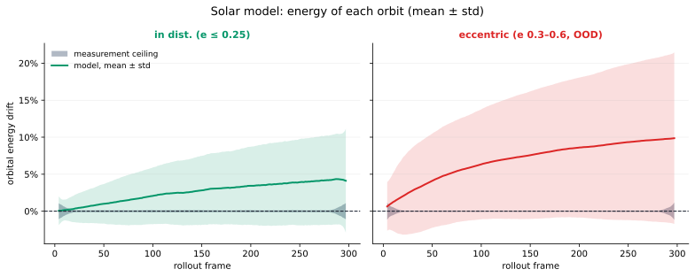
In real physics these curves would be flat lines at zero: an orbit keeps its energy forever. The model's planets instead slowly lose energy and sink toward their star, about 4% over 300 frames on familiar orbits and 10% on oval ones. The thin gray band is the measurement error, far smaller than the effect.
5 · Held-out object kind
A second shapes model is trained on the same recipe but on a dataset containing no balls. Both models are then rolled out on the same 2,000 ball-containing scenes (2,998 balls, 4,468 other shapes, identical per-scene seeds). Survival counts an object as gone only when it clearly disappears and stays gone, so one-frame glitches cannot move the curve.
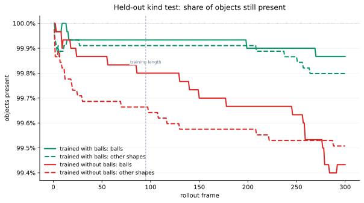
All four curves stay above 99%: object loss is rare for both models. The clearest gap is between the two solid lines: the no-ball model loses about four times as many balls as the control (31 vs 7 of 2,998). For the other shapes the two models are nearly equal (32 vs 23 of 4,468). So the unknown kind is kept, but it is the one that suffers.
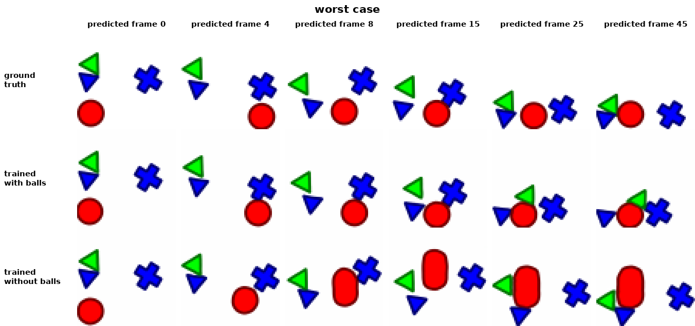
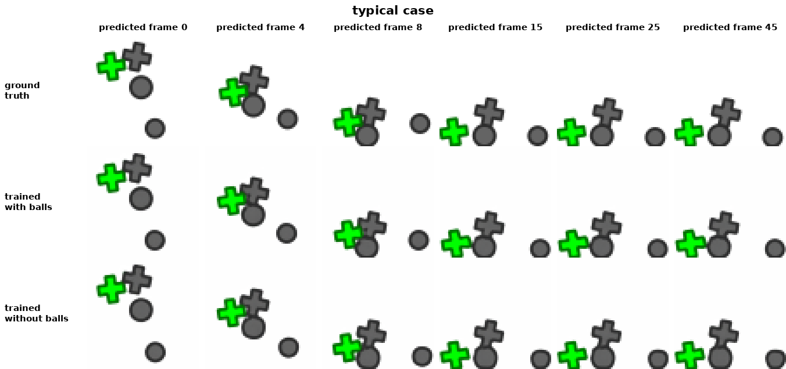
In the worst cases the model redraws the unknown ball as a kind it knows: the red ball is stretched into a rounded plank within 15 frames and never recovers. In typical scenes the three sources are hard to tell apart.
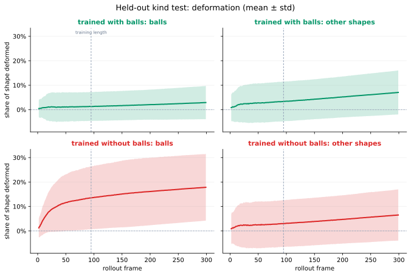
Balls under the no-ball model deform steadily along the rollout, ending at 18% of the shape, roughly ten times the control model. The same model's familiar shapes stay clean. The model reshapes the unfamiliar object rather than removing it.
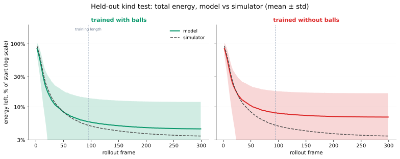
The no-ball model keeps more leftover motion in the scene than the simulator says it should. Most of that is the deformed balls wobbling in place after everything else has settled.
Rollouts
The real simulation on the left, the model's prediction from the same 5 starting frames on the right: 150 predicted frames for balls and shapes, 300 for the solar systems.
Bouncing balls
3 balls
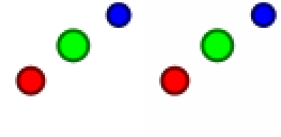
Rigid shapes
triangle, plus, 2 planks, ball
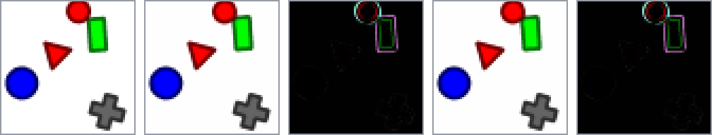
Solar systems
blue star
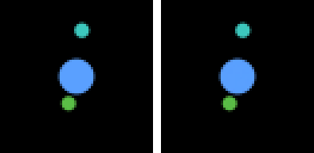